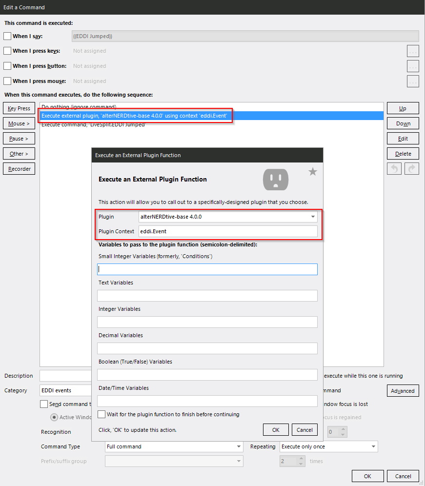

General Configuration¶
Settings¶
All profiles will load sane defaults if you haven’t changed anything. The configuration is stored in a bunch of VoiceAttack variables which in turn are stored in your custom profile. You could even have different custom profiles with their own distinct settings.
You change the configuration via voice commands:
- For toggles (booleans):
customize setting [enable;disable] <trigger phrase> - For everything else:
customize setting set <trigger phrase>
You can find a list of trigger phrases here, or you can say
customize setting list [options;settings] for a list of voice triggers and
what they do. If you don’t remember your settings or just want a nice list,
customize setting report [options;settings] will print that to the
VoiceAttack log. If you want to reset everything back to default state, say
customize setting clear all my settings.
The “customize setting” prefix is kind of a leftover from times long gone and does not quite fit anymore. Might change in a future version.
Since the settings are saved to your custom profile they will not be preserved when you switch profiles. Once you switch back, the correct settings for the profile are re-loaded.
General Settings for All Profiles¶
Toggles:
auto update check: Automatically check Github for profiles updates when the profile loads. Default: true.eddi quiet mode: Make EDDI shut up. Disables all built-in speech responders. Default: true.
Other settings:
elite paste key: The key used to paste in conjunction with CTRL. The physical key in your layout that would be 'V' on QWERTY. Default: 'v'.log level: The level of detail for logging to the VoiceAttack log. Valid levels are "ERROR", "WARN", "NOTICE", "INFO" and "DEBUG". Default: "NOTICE".quit to desktop delay: The delay before restarting the game after hitting “Exit to Desktop”, in seconds. Default: 10.0. (Used by therestart from desktopcommand)
Note on Non-Standard Keyboard Layouts¶
Because Elite’s keyboard handling is … weird you’ll have to set the key to use
for pasting text into Elite:Dangerous if you are not using a “standard”QWERT[YZ]
layout. You will have to change it to the key that is physically in the place
where V would be on QWERTY, e.g. P for Neo2.
To set the key, say “customize setting set elite paste key”.
Adding Commands¶
If you want to edit a command or add your own, do not edit the profiles directly. Instead create commands in your custom profile, and copy commands you want to change over to that before editing them. This will make sure no changes are lost if you update the profiles.
EDDI Events¶
Because of limitations of VoiceAttack itself, only the first matching command
found will be executed, including EDDI events. That means that if you create
commands to handle EDDI events, you are going to have to make sure that the
appropriate handlers in my profiles are called, too. That is done by invoking
the eddi.Event plugin context of the alterNERDtive-base plugin. Otherwise
stuff will break.
